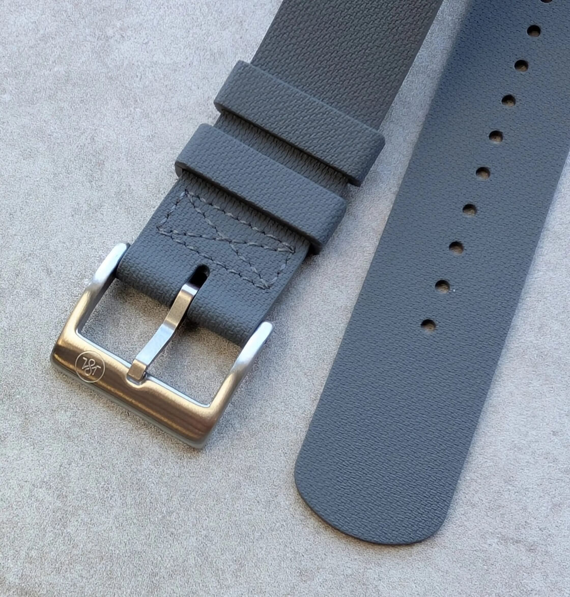
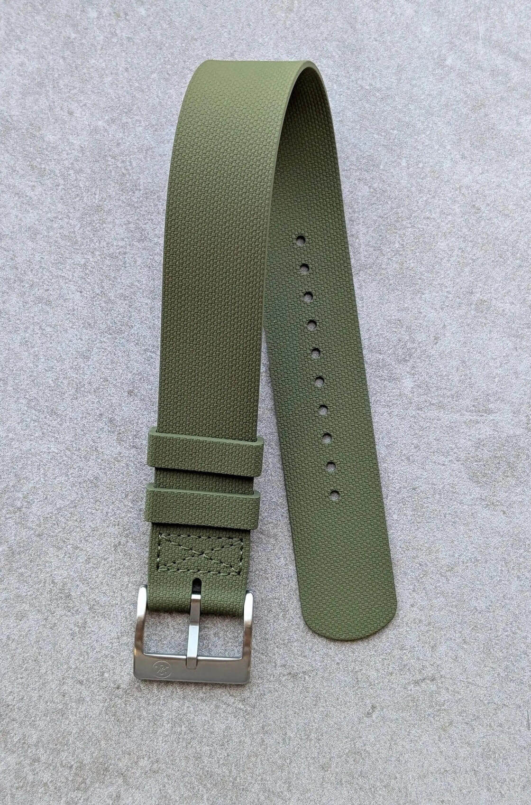
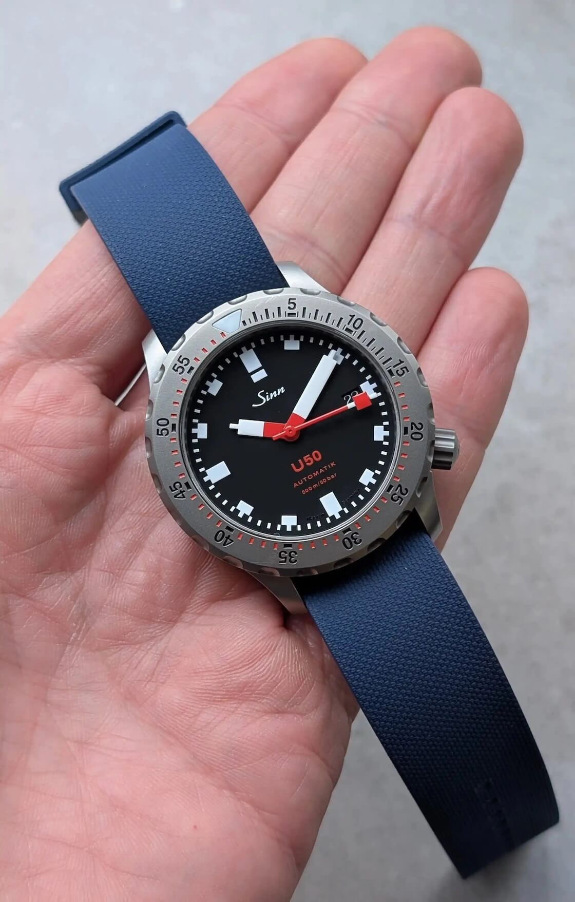
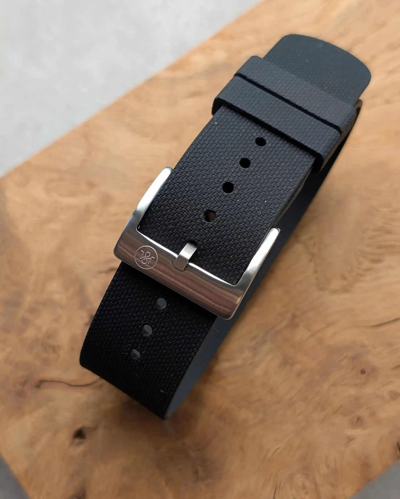

New Release: The Strap Tailor Launches FKM Rubber Military Dive Straps
OK, I will admit it. It takes quite a bit for a new watch strap collection to really grab my attention these days. The market is flooded with variations on familiar themes, and genuine innovation can feel hard to come by. I am rarely truly excited about a new strap launch. But then I saw the latest release from The Strap Tailor: their Rubber Military Dive straps. And you know what? This collection got me interested.
 Nenad Pantelic • April 30, 2025
Nenad Pantelic • April 30, 2025

Why the enthusiasm? Well, how many high-quality, rubber single-pass strap options are really out there? Not that many. I know of Singular's Nato Gummi, YellowDog of course, famous 328 by ZULUDIVER, and a few other rubber mil straps. The Strap Tailor seems to have identified this gap and delivered something that, honestly, looks awesome.
These straps immediately caught my eye because they resemble the excellent straps supplied with the Tudor Pelagos FXD models, particularly the Marine Nationale version.
I like the single-pass construction. This offers the security of a pass-through strap without the added height under the watch case that you get with a traditional NATO construction.
The textured finish adds a bit of a visual interest. The texture is not super pronounced, which is a plus, in my opinion. Even the details, like the matching rubber keepers, feel cohesive and well-thought-out.
Here are the official specifications:
| Material | FKM Rubber |
| Finish | Matte & Textured |
| Strap Length | 250mm (excluding buckle) |
| Lug Widths | 20mm | 21mm | 22mm |
| Wrist Size Compatibility | Fits wrist sizes 6" - 8.5" (155mm - 215mm) |
| Thickness | 1.3mm |
| Buckle | Signed Brushed 316L Steel |
| Colors | Black, navy blue, brown, grey, olive green |
Of course, looking at pictures and specs is one thing. The real test is how it feels and performs on the wrist. I am definitely going to try and get my hands on one of these Military Dive straps for a proper review.



I want to see how that 1.3mm thickness feels, how flexible the FKM rubber is, and how it pairs with a few different dive or field watches. So, stay tuned for a full hands-on experience.
Where to Buy & Pricing
If you are as intrigued as I am, you can check out the new collection directly on The Strap Tailor's website.
They are currently priced at £38 GBP (around $52), which feels very competitive for a strap offering this feature set.
Innovating When It Matters
In what sometimes feels like challenging times for the watch industry, it is genuinely refreshing and encouraging to see brands like The Strap Tailor not just treading water, but actively introducing well-considered products.
They have clearly listened to enthusiasts, identified a niche for a practical, single-pass rubber strap, and delivered a product that looks to be a winner.